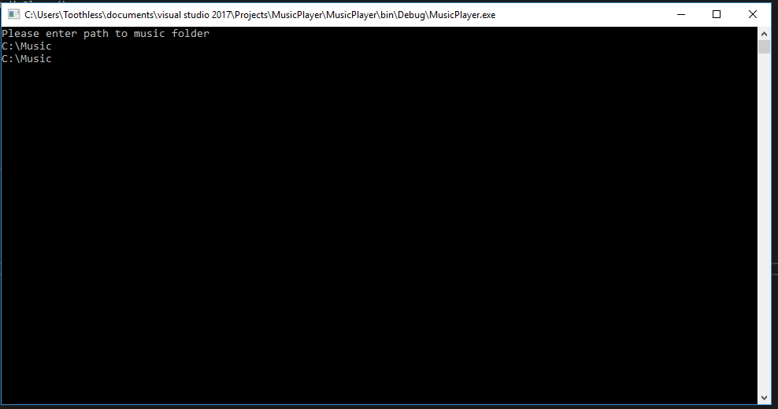

Make a Simple Command Line Music Player With C# #2
This time we are going to add the ability for users to enter a music folder location then have the program import all music files from that folder and its sub-directories.
Let's start by setting up the variables and references that we are going to need in this tutorial
using System.IO;
using System.Collections.Generic;
using WMPLib;
...
static class Program
{
private static List<string> musicPath = new List<string>();
private static WindowsMediaPlayer player = new WindowsMediaPlayer();
static void Main(string[] args)
{
GetPaths();
Console.ReadLine();
}
private static void GetPaths()
{
}
}
Here we have changed the music path to a List so that we can store every music file found in the given folder and its sub directories, the List comes from the System.Collections.Generic library.
We are also initializing the variables as they are created just for clarity.
Then after removing all previous code from the Main() method and then adding a call to a new method called GetPaths(), underneath this we create it as private static with a return type of void. This means that the method can only be acessed from inside the class it is defined, private, and that it cannot be instanced static
Instanced and Static Variables
The difference between an instance and a static object is subtle however very useful and important.
When a class is created if it has instance variables new ones will be created and associated to that new class object with their default values. Theise variables are seperate from all other instances of the class so changing their values will NOT affect the values on another instance of the class. However when a static variable is used this variable is not recreated each time a new instance of the class is created. So changing their values WILL affect all other instances of the class.
An example of this is shown below
public class Foo
{
public static int staticInt;
public int instancedInt;
public int GetStaticInt()
{
return staticInt;
}
}
public class Example
{
void Bar()
{
var var1 = new Foo();
var var2 = new Foo();
var1.instancedInt = 2;
var2.instancedInt = 5;
var1.staticInt = 3; //Error
Foo.staticInt = 3; //works
Console.WriteLine(var1.instancedInt); //returns 2
Console.WriteLine(var2.instancedInt); //returns 5
Console.WriteLine(var1.GetStaticInt()); //returns 3
Console.WriteLine(var2.GetStaticInt()); //returns 3
}
}
Here is also another explanation of instanced and static variables: Programming Interview.com - What’s the difference between a class variable and an instance variable?
And another from Dot Net Perls: Dot Net Perls - C# Static Method, Class, and Constructor
Static and Instanced Methods
A static method works in the same way to the static variable. However appart from the arguments passed into the function and the variables defined in the function the only other outside variables it may use are the static variables in the containing class. However, unlike a static variable a static method can be called from an instance of the class.
An instance method can access non-static or instanced variables in the class and will reference the variable values from the instance that it is called from. However, this method must be called from an instance of the class.
An example and explanation from Dot Net Perls: Dot Net Perls - C# Static Method, Class, and Constructor
Return Types
A return type is the type of data that the method will give back.
So if you don't want a method to return anything you can say that the return type is void. However, if you want to return some data you can return any type of data, for example you can return a class just as easily as an int.
To return some data from a method all you need to do is use the return before the data you want to return. An example is shown below
public int Foo()
{
return 1;
}
Why use a List<string> and not an array?
This is because when searching through the files we will not know how many music files there actually are. As an array requires a length when initialized this would either cause us to set a size to large or too small, this is not ideal so instead we use a List
When use a List<> as opposed to an array?
There is no set rule as to when to and when not to use an array as opposed to List<> so I can only suggest when to use them and tell you when I would use one as opposed to the other. I would use a List<> when the ammout of data is ambiguous so there is no way to tell the length the array should be. Situations like this arise when users input is requred that changes the ammout of elements in the List<>. All other times I would most likely use an array. There are also a few cases when the C# Linq library will only work with a List<> so when a Linq's function has the possibility of being required I will also use a List<>.
...
private static void GetPaths()
{
string inputPath = "";
Console.WriteLine("Please enter path to music folder");
inputPath = Console.ReadLine();
Console.WriteLine(inputPath);
}
...
Now we crate a new variable to store the user input, inputPath and after that prompt the user to enter something.
Then the program will wait for input and to ensure that the code has worked it prints out the input to the console. The this the users also does not have to type \\ between each folder as that is handled for us.
Result below:

As seen the prompt appears. The user is allowed to enter an input then after enter is pressed the input is immediately output. The console then stays open as after the the method is finished it hits the Console.ReadLine() in the Main() method as that is where the method is called from.
...
inputPath = Console.ReadLine();
foreach (var path in Directory.GetFiles(inputPath, "*.*", SearchOption.AllDirectories))
{
musicPath.Add(path);
}
...
This the most complex bit of code we have seen so far so lets break it down.
First:
Directory.GetFiles()
This a static function of the Directory class that means that we do not need to create an instance of the class to access the method. This method has 3 overloads, in this instance we are using 3 parameters. The folder path, inputPath, which is where the method will start the search.
The next argument, "*.*", is the search pattern, meaning the type of file we are looking for. We are useing the * which is called a wild card meaning that the method does not care what the file name or type is it just retrieves it. This feature is also in the windows explorer you can try it for example type *.exe somewhere and it will return all files with the extension .exe, It can also be used as filename.* where it will return all files with that name regardless of the extension, this version is not used as commonly as most modern file system automatically append .* if it is not specified. We could do something like "*.mp3" however this will only return .mp3 files and you may have some music files that are .mp4, .m4a, etc so useing the wildcard for both the file name and extension means that the method will return all files in the directory.
The final argument is an enumerator called SearchOption with the value AllDirectories, this is the option to search all sub directores or just the given folder ignoring sub directories.
Second:
The foreach loop. As Directory.GetFiles() returns an array we can loop though the results one by one. So every item in the return array is added to the musicPath list. Unlike a for where you have to manually index the array each interaction of the loop a foreach will automaticaly assign the array value to the path variable each iteration fo easy use.
Finally:
musicPath.Add(path). This is the most simple line, here every iterration of the loop adds the current value stored in the path to the musicPath list
Difference between a foreach and a for loop
A for says that something should be performed N number of times and it does not have to iterate over a IEnumerable. You can just say to go between 2 numbers adding each inturn. However a foreach loop goes over each item in an IEnumerable object in turn. Or in other words perform this code on each item in this list/array.
When to use a foreach as opposed to a for loop
You should use a foreach loop when you have a list of things that will all need to have the same thing done to them and the index of the item is not important then you should use a foreach loop, due to the fact that it is safer (cannot try to acces an index outside of the arrays bounds). Otherwise if the index is important, you must skip evey other element, etc you should use a for loop.
Enums
An enum or Enumeration type is a special value they allows you to specify a group of named numeric constants.
They can be defined like so:
public enum Foo {ENUMONE, ENUMTWO, ENUMTHREE}
This defines a new enum with three values. By default all enums are of type int however, that can be changed by adding an = operator to one of the arguments.
As seen below all values are now if type decimal:
public enum Foo {ENUMONE = 0.5, ENUMTWO, ENUMTHREE}
enums can be used as follows:
var example = Foo.EUMONE;
You may also convert an enum to its base type via the use of an explicit conversion which we will cover at some other time but to convert an enum to its base type you would use:
decimal example2 = (decimal)example;
Method Overloading
Method overloading allows 2 methods to be defined with the same name in the same class however with a different number of arguments or different input types (have a unique method signature). Each of these different methods may have different logic.
Example:
public void Foo(int x) {...}
public void Foo(float x) {...}
public void Foo(int x, int y) {...}
All of these methods can coexist in the same class as they each have different signatures (the number and types of data passed into a method).
If you tried this:
public void Foo(int x) {...}
public void Foo(int y) {...}
This would not work as the argument name does not affect the signature of the method.
Overloaded methods also cannot return different types and the params keyword do not cout as part of the method signature an example of the params usage is seen below:
public void Foo(int x) {...}
public void Foo(params int x) {...}
The above would cause an error.
Method overloading is very useful and you should play around with it when you get a chance.
However here we have a problem, currently the program does not care whether or not it actually returns a music file. So for example it could return a .png as some people store the album art with their music. So next lets eliminate that problem
...
foreach (var path in Directory.GetFiles(inputPath, "*.*", SearchOptionAllDirectories))
{
if (string.IsNullOrEmpty(path))
continue;
if (path.EndsWith(".mp3") || path.EndsWith(".mp4") || path.EndsWith(".m4a"))
musicPath.Add(path);
}
...
Firstly we check if the path exists, whilst not strictly necessary there are some small cases where a this could happen so this line can be ignored if you wish.
Then we use a method that is inbuilt into the string type called EndsWith(), this is a method that returns a bool(true/false) depending on whether or not the given string ends with the passed value in our case a file extension such as ".mp3"
How can you missout the {} in a if statement?
If you only have one line of code and one branch to an if C# will allow you to just not use {} it also reduces the size of the code on the website so I will use that feature whenever I can. You dont have to it is personal preference as it does not affect performance in any way.
What is the var data type?
The var type is a type that can be assigned any data type. It is effectively short had for a variable decleration. However there can be no ambiguity in the data type it is short hand for so the variable must be assigned value during its creation if useing the var keyword. In the above code it is assigned a types of string as Directory.GetFiles() returns a type of string[].
What does continue do/mean?
The continue is a keyword that is mainly used in loops and it is used to ignore this iteration and move onto the next an example is shown below:
for (int i = 0; i < 3; i++)
{
if (i == 1)
continue; // ignore all other code below this and move onto the next iteration of the loop
Console.WriteLine(i);
}
This will output: 0, 2. As you can see 1 is ignored as all code below continue was ignored for that iteration of the loop.
Great so now I have a program that can search through my files, so what?
Well now he have all of the files from the directory stored in an array we can use this to randomly select a song to play from musicPath load it into the player object, then once it is finished we can select another without haveing to rescan all of the files in the directory improveing efficency.
So lets do that now.
...
static void Main(string[] args)
{
GetPaths();
foreach (var song in musicPath)
{
player.URL = song;
player.controls.play();
while (true)
{
if (player.controls.currentPosition == 0)
break;
}
}
Console.ReadLine();
}
...
Here we use another foreach to go through each of the songs in turn, the order will depend on the order that the files where found.
When the song is played we then enter a while loop. This is becasue we do not need to know how long the song actually is so a while loop will fit our needs perfectly as unlike a for or foreach loop it does not need a stopping condition, meaning that it can theoretically run forever. But this is not what we want so we instead check the currentPosition of the track and if if is less than 0.5 it has finished as when a song has finished this will return 0, when this value is returned we know that we need to exit the while loop and move on to the next song so we use the break keyword, allowing the foreach loop to move onto the next item in the list.
What do break and return do?/What is the difference between them?
Whilst they can both be used to exit a piece of code the the amount they exit differs. So a break statement will exit the current loop and a return statement will exit the current method or return to the next iteration of the loop.
Example of a break and return in a while loop:
void Foo()
{
int x = -1;
while(true)
{
if(x == 0)
break; // escape while() and jump to execute code after the the loop
else if(x == 1)
return; // will end the function Foo() immediately,
// no further code inside this method will be executed
//do stuff eventually setting variable x to either 0 or 1
}
//code that will be executed on break (but not with return)
}
So as you can see the break will exit the while loop and return will exit the method Foo()
They also work the same in a foor loop as can be seen below:
void Foo()
{
for(int i = 0; i < 10; i++)
{
if(i == 0)
break; // exit the loop and go to the code after the loop
else if(i == 5)
return; // will end the function Foo() immediately,
// no further code inside this method will be executed
}
//code that will be executed on break
}
return can also be uesd to give data out of a function by putting some data after the statement as shown:
int Foo()
{
return 1;
}
Why highlight the numbers?
This is to bring to attention the different numerical types that C# has a few different commonly used numeric types and then a few less common. The common types are as follows:
Bar int each of the types may hold real numbers (numbers with a decimal part). Each of these is also a signed value meaning it can hold negative numbers.
The unsigned value types are show below in order of acending max value: All of these types can only hold integers (a whole number) so as you can see only integral types can become unsigned. All of these types can become signed values by removeing the preceding u, except in the case of the btye where we add a preceding s resulting in sbyte.
When to use each of the different types is mostly personal preference hoewver some differences are that int cannot divide by 0 and will result in an error where as a float will instead not produce an error. By default when typeing a number like 0.5 its type will be a double in C# to convert this to a float we must write 0.5f and to convert to an int we can type:
int x = (int)0.5
Resulting in an int value of 0 as decimal to intreger conversion truncates the decimal part.
However, there is currently 2 bugs in the code.
- Entering an invalid file path will crash the program
- Only the last song plays
The first problem we will tackle in the next tutorial. However, the second we will fix now we will fix now and will be explained in a later tutorial as it requires some explanation, we are also fixing the second problem now as it is required for a functioning program, which is something that I would like to have at the end of every tutorialpost.
...
using WMPLib;
using System.Threading;
...
...
while (true)
{
Thread.Sleep(2000);
if (player.controls.currentPosition == 0)
break;
}
...
As said before Thread.Sleep(2000) will not be fully explained here as I would like to take some more time to fully explain threads in the next tutorial. However this pauses the thread that the program is running on for 2000ms (2 seconds), allowing the song to run for some time before checking if it is ended meaning that the program wont think the start of the song is the end.
This does cause the thread to sleep every time the loop is run however in the worst case it willl only take 2 second for the next song to start after the previous is finished.
This is the end of this tutorial. So what have we done this time?
- Allowed our program to get all files from a specified location
- Filtered our results to only allow music files to be returned
- Play all songs found in a directory in order
- Next time we will allow the program to chose the song randomly and discuss threading the program as currently no user input can be taken when a song is playing.
So if you are feel adventurous before next time try to make the program choose the song randomly.
Hope you enjoyed and see you next time.
Back To Collection | Previous | Next